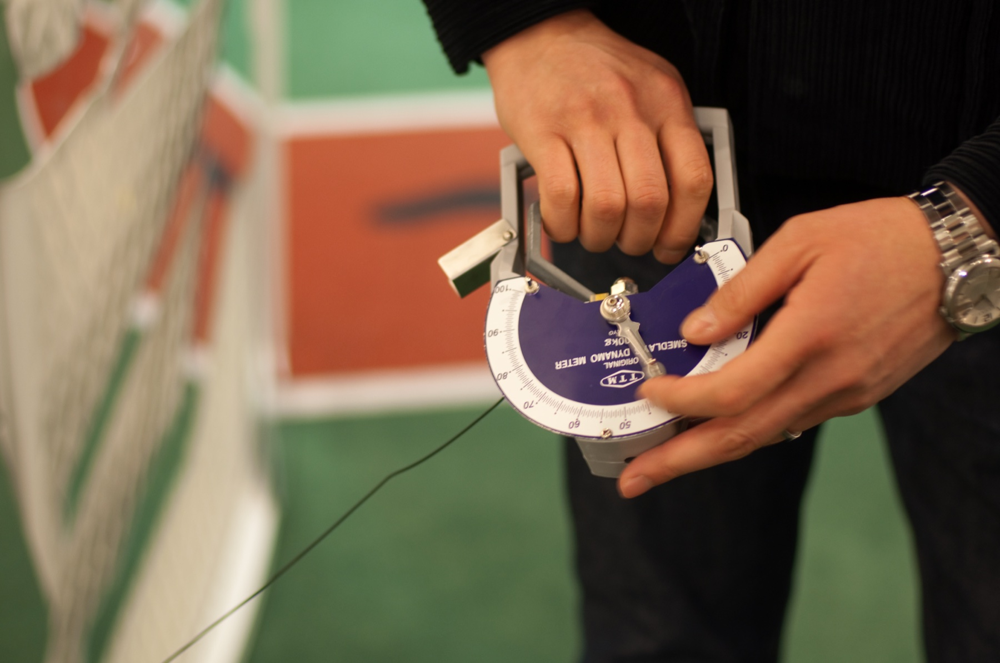

Página 3 · E6
O que é exercer força
Exercer força adequada é vencer a resistência da gravidade e, além disso, vencer uma resistência extra (carga). Exemplos cotidianos: carregar bebê, sacola de compra, arma e presa na caça, tijolo na construção — tudo exige força além de só não deixar o membro cair.
A metáfora operacional
A metáfora útil: pegar a sacola no chão e levá-la para casa — conseguir levantar a sacola.
O que não entra neste eixo
Não importam, para o foco desta queixa: tremer ao segurar, lentidão, dificuldade de acertar o alvo, decomposição do movimento ou “classe” estética do movimento (ginástica artística). O eixo é quantidade da força (consegue ou não vencer carga/gravidade), não qualidade do movimento.
Distúrbios de qualidade (ataxia, parkinsonismo fino etc.) ficam fora do eixo da fraqueza — a fronteira precisa ficar explícita para não misturar quantidade de força com coordenação ou velocidade.

Quiz — fixação
-
Para a queixa de fraqueza, o que define força adequada?
Gabarito C. quantidade = vencer gravidade + resistência.
A/B/D são eixos de qualidade/controle, não o denominador de fraqueza verdadeira. confusão com ataxia/Parkinson/tremor essencial.
-
Paciente “erra o alvo” ao pegar um copo, sem déficit de carga. Onde isso se encaixa no raciocínio da fraqueza?
Gabarito B. decomposição/acerto de alvo ≠ quantidade de força.
A/C/D são andares de fraqueza verdadeira. tudo que “parece neuro” vira fraqueza no vocabulário leigo.